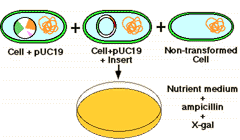
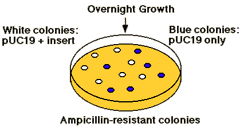

Recombinant DNA Technology Problem Set
Problem 11: Identifying recombinants
Tutorial to help answer the question
A key feature of insertional mutagenesis for the identification of plasmids containing recombinant DNA is:
A. the production of nutritional auxotrophs. B. the DNA sequencing of recombinant plasmids. C. the production of restriction endonuclease maps of recombinant plasmids. D. introns can be moved to new locations within the gene. E. the disruption of a gene on the plasmid by the inserted recombinant DNA.
Tutorial
Insertional mutagenesis
|
The plasmid vector contains another identifiable gene (e.g., a second drug resistance or an enzyme activity), with the coding sequence of this gene containing the restriction site for insertion.
Insertion of the foreign DNA at this site interrupts the reading frame of the gene and result in insertional mutagenesis. |
Example
|
In this example, the β-galactosidase gene is inactivated. The substrate "X-gal" turns blue if the gene is intact, i.e. makes active enzyme. White colonies in X-gal imply the presence of recombinant DNA in the plasmid. |
  |


University of Arizona
Updated: July 15, 1999
Contact the Development Team
http://biology.arizona.edu
All contents copyright © 1996-99. All rights reserved.